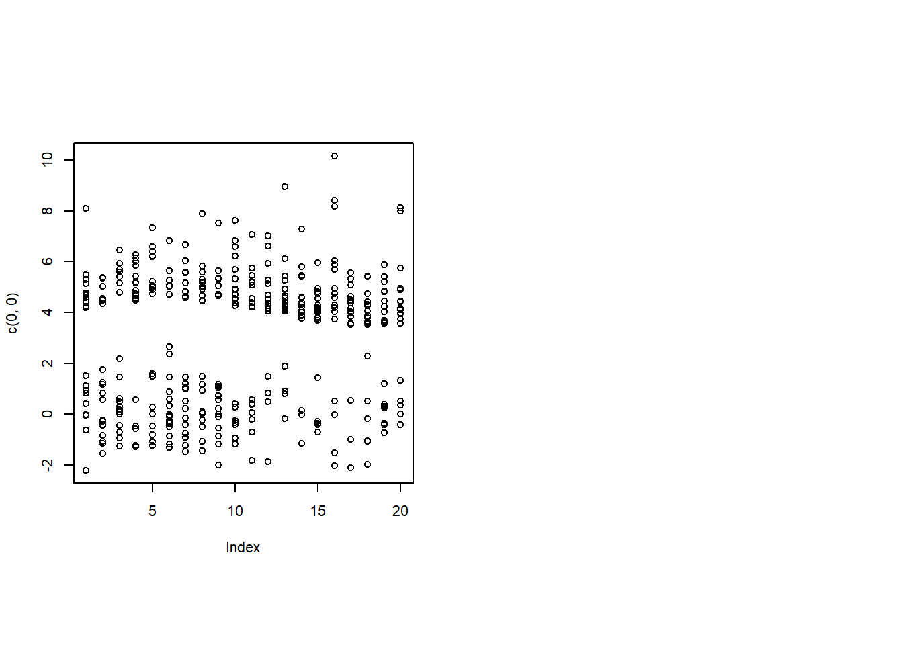
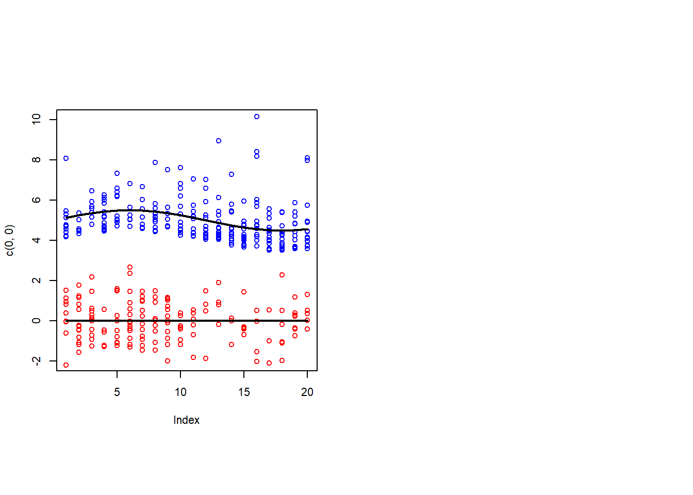

2 The model
Let \(X^{(t)} \in \mathbb{R}^{p}\) be given fixed design points and \(Y_i^{(t)} \in \mathbb{R}^{d}\) be the observed dependent variables, for \(1 \le i \le n_t, \ 1 \le t \le T\). We model \(Y_i^{(t)}\) as i.i.d. draws from \(K\) different \(d-\)dimensional log-concave distributions, conditioning on \(X^{(t)}\). Let \(Z_i^{(t)}\) denote the (latent) cluster membership so that \(P(Z_i^{(t)} =k|X^{(t)} ) = \pi_k(X^{(t)} )\), for \(1 \le k \le K\). Let \(\mu_k:\mathbb{R}^{p+1} \rightarrow \mathbb{R}^{d}\) be the unknown regression function, for \(1 \le k \le K\) and \(\mu_k\) is assumed to belong to a given family \(M\), which is closed under scalar addition. We further assume that \(M\) is the set of all affine functions so that \(\mu_k \in M\) if and only if \(\mu_k (x) = \theta_{k0} + \theta_k^T x\) for some coefficients \(\theta_{k0} \in \mathbb{R}^{d}\) and \(\theta_k \in \mathbb{R}^{p \times d}\). The conditional error \(\varepsilon_i^{(t)} |Z_i^{(t)} =k\) follows a mean zero, \(d-\)dimensional log-concave density \(exp(g_k)\) so that \(Y_i^{(t)} = \theta_{k0} + \theta_k^T X^{(t)} + \varepsilon_i^{(t)}, \text{ if } Z_i^{(t)} =k\).
Then, \[ Y_i^{(t)} |Z_i^{(t)} = k, X^{(t)} \ \sim \ exp[g_k(\cdot - \theta_{k0} - \theta_k^T X^{(t)} )] \] so that \[ Y_i^{(t)} | X^{(t)} \ \sim \ \sum_{k=1}^K exp[g_k(\cdot - \theta_{k0} - \theta_k^T X^{(t)} )]\pi_k(X^{(t)} ) \]
We model \[ \pi_{tk}(\alpha ) = \pi_k(X^{(t)} ; \alpha) = \frac{exp(\alpha_{k0} + \alpha_k^T X^{(t)} )}{\sum_{l=1}^K exp(\alpha_{l0} + \alpha_l^T X^{(t)} )} \] where \(\alpha = \{ \alpha_{k0}, \alpha_{k} \}_{k=1}^K\) is a collection of coefficients \(\alpha_{k0} \in \mathbb{R}\) and \(\alpha_k \in \mathbb{R}^{p}\) for \(1 \le k \le K\).
What we want to maximize here is the mixture of log-likelihood:
\[\begin{align*} L(\alpha, \theta, g; X, Y) &= \frac{1}{N} \sum_{t=1}^T \sum_{i=1}^{n_t} \log \mathbb{P}(Y_i^{(t)} |X^{(t)} ) \\ &= \frac{1}{N} \sum_{t=1}^T \sum_{i=1}^{n_t} \log \left[ \sum_{k=1}^K exp \left( g_k \left(Y_i^{(t)} -\theta_{k0} - \theta_k^T X^{(t)} \right) \right) \cdot \pi_{tk}(\alpha) \right] \end{align*}\]
where the parameters are \(\alpha,\ \theta = \{ \theta_{k0},\theta_k \}_{k=1}^K,\ g = \{ g_k \}_{k=1}^K\) where \(g_k\) is a logdensity of a logconcave density \(exp(g_k)\) for \(1 \le k \le K\), and \(X = \{X^{(t)} \}_{t=1}^T,\ Y = \{ Y_i^{(t)} \}_{i = 1,..., n_t}^{t = 1,..., T},\ N = \sum_{t=1}^T n_t\)
But directly optimizing \(L(\alpha, \theta, g; X, Y)\) is difficult due to its non-convexity. Instead, using the membership \(Z_i^{(t)}\), we define the joint log-likelihood:
\[\begin{align*} \Lambda(\alpha, \theta, g; X, Y, Z) &= \frac{1}{N} \sum_{t=1}^T \sum_{i=1}^{n_t} \sum_{k=1}^K \mathbb{I}\{Z_i^{(t)} =k\} \log \mathbb{P}(Y_i^{(t)} , Z_i^{(t)} = k |X^{(t)} ) \\ &= \frac{1}{N} \sum_{t, i,k} \mathbb{I}\{Z_i^{(t)} =k\} \left[ g_k \left(Y_i^{(t)} -\theta_{k0} -\theta_k^T X^{(t)} \right) + \log \pi_{tk}(\alpha) \right] \end{align*}\] Since we can’t observe \(Z_i^{(t)}\), we define the surrogate function, which is the conditional expectation of \(\Lambda(\alpha, g, \theta; X, Y, Z)\) with respect to the membership \(Z_i^{(t)}\), conditioning on \(X^{(t)}\) and \(Y_i^{(t)}\):
\[ Q(\alpha, g, \theta) = Q(\alpha, g, \theta; X, Y) = \frac{1}{N} \sum_{t=1}^T \sum_{i=1}^{n_t} \sum_{k=1}^K r_{tik} \left[ g_k \left(Y_i^{(t)} -\theta_{k0} -\theta_k^T X^{(t)} \right)) + \log \pi_{tk}(\alpha) \right] \] where the responsibility \(r_{tik}\) is defined \[\begin{align*} r_{tik} = r_{tik}(\alpha, \theta, g) = P(Z_i^{(t)} = k |Y_i^{(t)} , X^{(t)} ; \alpha, \theta, g) &= \frac{exp(g_k(Y_i^{(t)} -\theta_{k0} -\theta_k^T X^{(t)} )) \pi_{tk}(\alpha)} {\sum_{l=1}^K exp(g_l(Y_i^{(t)} -\theta_{l0} -\theta_l^T X^{(t)} )) \pi_{tl}(\alpha) } \end{align*}\]
Note that the responsibility is a probability, so it should sum up to one with respect to k in the sense that
\[ \sum_{k=1}^K r_{tik} = \sum_{k=1}^K P(Z_i^{(t)} = k |Y_i^{(t)} , X^{(t)} ) = 1 \] It will be useful to have data generated from this model for testing purposes, so we begin by defining a function for simulating from this model.
2.1 Generating data from model
The function will take as input the following arguments:
###"theta0-param"###
#' @param theta0 length K list, with `theta0[[k]]` being the estimate for the intercept coefficient
#' of the regression for kth group###"theta-param"###
#' @param theta length K list, with `theta[[k]]` being the p-by-1 vector. Initial estimate for coefficients
#' of the regression for kth group###"alpha-param"###
#' @param alpha (p+1)-by-K matrix. The coefficients for the cluster probabilities.###"X-param"###
#' @param X a T-by-p matrix of covariates, where `X[[t]]` being the p-vector of independent variable at time tWe define this bit of documentation in its own code chunk so that it can be easily reused since multiple functions in the package take it as input.
#' Generate data from mixture of log-concave regressions
#'
#' The mixture of log-concave regressions model is defined as follows:
#'
#' At time t there are n_t points generated as follows:
#'
#' Given Z_i^{(t)} = k, Y_i^{(t)} = theta_{k0} + theta_k^T X^{(t)} + epsilon_i^{(t)}
#'
#' where epsilon_i^{(t)} ~ exp(g_k)
#'
#' and P(Z_i^{(t)} =k |X^{(t)} ;alpha) = \frac{exp(alpha_{k0} + alpha_k^T X^{(t)} )}{\sum_{l=1}^K exp(alpha_{l0} + alpha_l^T X^{(t)} )}
#'
#' This function generates Y and Z
#'
#' For simplicity we here assume alpha = 0, K = 2, p = 2 and d = 1
#'
<<X-param>>
<<theta0-param>>
<<theta-param>>
<<alpha-param>>
#' @param num_points T-vector of integers giving the number of points n_t to
#' generate at each time point t.
#' @param err_type a K-vector of strings, each of which is the type of error distribution
#' for the each group. Now, it is one of 'Gaussian', 'exp'
#' @return Y length T list with `Y[[t]]` being a n_t-by-d matrix
#' @return Z length T list with `Z[[t]]` being a n_t vector of cluster memberships
#' @export
generate_mix_lcd_reg <- function(X,
theta0,
theta,
alpha,
num_points,
err_type = c('Gaussian', 'exp')) {
TT = dim(X)[1]
p = dim(X)[2]
Y = list()
Z = list()
for (t in 1:TT){
tmp = exp(alpha[1,] + X[t,] %*% alpha[2:(p+1),])
prob = tmp / sum(tmp)
Z[[t]] = rbinom(num_points[t], 1, prob[2])
n1 = sum(Z[[t]] == 0)
n2 = sum(Z[[t]] == 1)
Xt1 = theta0[[1]] + X[t,] %*% as.matrix(theta[[1]])
Xt2 = theta0[[2]] + X[t,] %*% as.matrix(theta[[2]])
if (err_type[1] == 'Gaussian') {
e1 = rnorm(n1)
} else {
e1 = rexp(n1, 1) - 1
}
if (err_type[2] == 'Gaussian') {
e2 = rnorm(n2)
} else {
e2 = rexp(n2, 1) - 1
}
Y[[t]] = rep(NA, num_points[t])
Y[[t]][Z[[t]] == 0] = rep(Xt1, n1) + e1
Y[[t]][Z[[t]] == 1] = rep(Xt2, n2) + e2
}
return(list(Y = Y,
Z = Z))
}Let’s generate an example in the \(d=1\) case:
set.seed(1)
d = 1; K = 2; TT = 30
X1 = sin((1:TT)*pi/12)
X2 = c(rep(0, TT/2), rep(1, TT/2))
X = cbind(X1, X2)
theta_true = list(c(0, 0), c(1/2, 0))
theta0_true = list(0, 5)
num_points = rep(200, TT)
alpha_true = matrix(rep(0, K*3), ncol = K)
alpha_true[3,2] = 1
dat = generate_mix_lcd_reg(X,
theta0_true,
theta_true,
alpha_true,
num_points,
c('Gaussian', 'exp'))
Y = dat$Y
Z = dat$Z2.2 Visualizing data in one-dimensional case
Let’s make a function for visualizing the data in the one-dimensional case.
#' Plot raw data when `d = 1`
#'
<<Y-param>>
#' @export
plot_data <- function(Y) {
par(mfrow = c(1, 2), pty = 's', cex = 0.7)
plot(c(0, 0), xlim = c(1, TT), ylim = range(unlist(Y)), col = 'white')
for (t in 1:TT){
points(rep(t, length(Y[[t]])), Y[[t]])
}
}Let’s look at our example data using this plotting function:
plot_data(Y)
2.3 Visualizing data and model in one-dimensional case
We’ll also want a function for plotting the data with points colored by true (or estimated) cluster. And it will be convenient to also be able to superimpose the true (or estimated) means. The next function does this:
#' Plot data colored by cluster assignment with cluster means when `d=1`
#'
<<X-param>>
<<Y-param>>
#' @param Z a length T list with `Z[[t]]` being a n_t vector of cluster assignments
<<theta0-param>>
<<theta-param>>
#' @export
plot_data_and_model <- function(X, Y, Z, theta0, theta) {
plot(c(0, 0), xlim = c(1, TT), ylim = c(-2, 10), col = 'white')
for (t in 1:TT){
points(rep(t, sum(Z[[t]]==0)), Y[[t]][Z[[t]]==0], col = 'red')
points(rep(t, sum(Z[[t]]==1)), Y[[t]][Z[[t]]==1], col = 'blue')
}
lines(1:TT, rep(theta0[[1]], TT) + X %*% theta[[1]], col = 'black', lwd = 2)
lines(1:TT, rep(theta0[[2]], TT) + X %*% theta[[2]], col = 'black', lwd = 2)
}For now we can use this to visualize the true model, although later this will be useful for visualizing the estimated model.
par(mfrow = c(1, 2), pty = 's', cex = 0.7)
plot_data_and_model(X, Y, Z, theta0_true, theta_true)